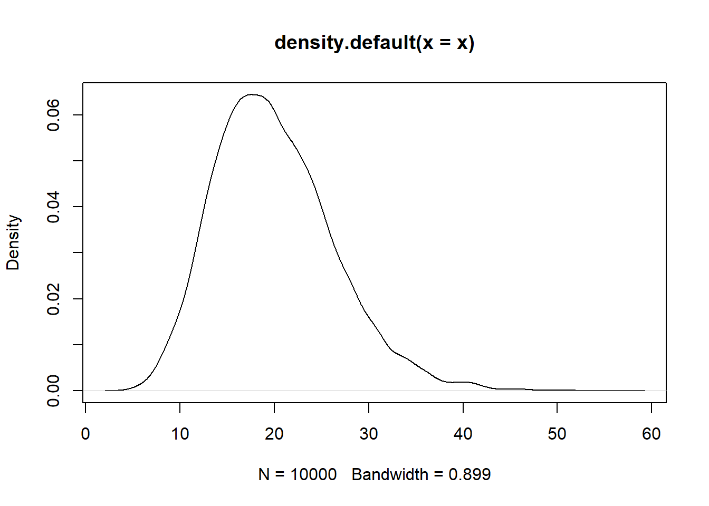

4 Probabilidades
Ejercicios
- Sea el experimento aleatorio lanzar 2 dados y sumar el resultado, ¿cuáles son todos los posibles resultados de este experimento aleatorio?
Resp. (2,3,4,5,6,7,8,9,11,12); 9 (4,5),(5,4),(6,3),(3,6)
- Un estudiante va a dar su primer parcial sobre 30 puntos, el examen es de tipo falso/verdadero. El estudiante no se preparo y responderá al azar el examen, ¿cuáles son los posibles resultados del examen?
Resp. La nota del estudiante puede estar entre 0 al 30
- El juego del cacho es un juego donde se lanzan 5 dados.
Tarea. ¿Cuántos resultados posibles existen al lanzar 5 dados?
1 dado (6) 2 dados (1,1), (1,2), (1,3). … (6,6) 3 dados (1,1,1), (1,1,2), …. (6,6,6) 4 dados (1,1,1,1), (1,1,1,2)…. (6,6,6,6) 5 dados
4.1 Probabilidad e Inferencia estadística
Experimento: Proceso mediante el cual se obtiene un resultado de una observación.
Experimento aleatorio: Cuando los resultados de la observación no se puede predecir con exactitud antes de realizar el experimento.
Espacio Muestral: Es la colección (conjunto) de todos los resultados posibles de un experimento aleatorio. Denotado por
\[\Omega\]
Ejemplo, el juego del cacho es un juego donde se lanzan 5 dados. ¿Cuántos resultados posibles existen al lanzar 5 dados?
Respuesta, iniciemos observando los resultados de un dado, luego de 2, hasta llegar a 5 dados.
1 dado: (1,2,3,4,5,6). \(\#\Omega=6\)
2 dados: \(\#\Omega=36=6*6\)
3 dados: \(\#\Omega=216\)
4 dados: \(\#\Omega=1296\)
5 dados: \(\#\Omega=7776\)
Evento: Un subconjunto del espacio muestral
4.1.1 Probabilidad
Es una medida de incertidumbre al rededor de un experimento aleatorio, esta medida se calcula en base a eventos de interés y toma valores entre 0 y 1.
Una definición formal de probabilidad es:
\[P(A)= \frac{\text{Casos posibles}}{\text{Casos totales}}=\frac{\#A}{\# \Omega}\] Ejemplos,
- En el lanzamiento de una moneda, ¿cuál es la probabilidad de obtener cara?
\[P(cara)=\frac{1}{2}=0.5\]
- En el lanzamiento de un dado, ¿cuál es la probabilidad de obtener un número par?
\[P(par)=\frac{3}{6}=0.5\]
- En el lanzamiento de dos dados, ¿cuál es la probabilidad de obtener 7?
\[P(7)=\frac{6}{36}\]
- En el juego del cacho, ¿cuál es la probabilidad de obtener dormida (todos las caras de los dados iguales)?
\[P(Dormida)=\frac{6}{7776}=0.0007716\] * ¿Cuál es la probabilidad de aprobar la materia de Estadística I para cualquier estudiante al inicio del semestre?
\[P(aprobar)=\frac{\geq 51}{NotasPosibles}=\frac{50}{101}=0.495\] ## Distribuciones muestrales
Variable aleatoria: Es una función que asigna a los eventos un número.
La idea de las distribuciones muestrales es estudiar el comportamiento de todas las muestras posibles a partir de una estadística.
Estadística: Un valor calculado a partir de la muestra
Ejemplo, imaginemos que tenemos un grupo/población de 5 estudiantes con el tiempo que normalmente demoran en llegar a la universidad desde sus casas.
- PO: (A,B,C,D,E)
- Y: Tiempo en minutos en llegar desde sus casas a la U
\[Y=\{Y_A=20,Y_B=30,Y_C=35,Y_D=60,Y_E=20\}=\{20,30,35,60,20\}\] ¿Cuál es el promedio del tiempo que demoran en llegar los estudiantes a la Universidad?
\[\bar{Y}=\frac{\sum_U y_i}{N}=\frac{165}{5}=33\]
Imaginemos que definimos un tamaño de muestra de \(n=2\), ¿Cuántas muestras posibles existen?, cuáles son los valores de las medias en cada muestra para la variable \(Y\).
- (A,B), (A,C), (A,D), (A,E), (B,C), (B,D), (B,E), (C,D), (C,E), (D,E)
- (20,30), (20,35), (20,60), (20,20), (30,35), (30,60), (30,20), (35,60), (35,20), (60,20)
\[\hat{\theta}=\{\bar{y}_1=25 ,\bar{y}_2=27.5,\bar{y}_3=40,\bar{y}_4=20,\bar{y}_5=32.5,\bar{y}_6=45,\bar{y}_7=25,\bar{y}_8=47.5,\bar{y}_9=27.5,\bar{y}_{10}=40\}\] ¿Cuál sera la media de las medias muestrales?
\[\bar{\bar{Y}}=\frac{\sum_{i=1}^{10}\bar{y}_i}{10}=33\]
Veamos el ejemplo ampliado, con una población de 20 estudiantes y una muestra de 4, para la misma variable.
- (E1,E2,E3,E4,E5,E6,…,E20)
\[Y=\{20,25,40,60,70,10,35,45,40,20,33,50,55,50,20,25,55,65,30,35\}\] * Las muestras posibles son de 4845 * ¿Cuál es el promedio de la población?
\[\bar{Y}=\frac{783}{20}=39.15\]
y<-c(20,25,40,60,70,10,35,45,40,20,33,50,55,50,20,25,55,65,30,35)
ym<-combn(y,4)
yy<-apply(ym,2,mean)
sum(yy)/4845## [1] 39.15hist(yy)plot(density(yy))
abline(v=39.15,col="red")
for(i in 1:20){
muestra<-sample(y,4)
muestra
mean(muestra)
abline(v=mean(muestra),col="blue")
}
Tarea: Como se obtuvo el valor de 4845. De un población de 30, se obtiene muestras de tamaño 6. ¿Cuántas muestras posibles se pueden obtener?.
4.2 Distribución Normal
Es una distribución de probabilidad que tiene un uso muy importante en diferentes áreas de la estadística y tiene algunas características relevantes:
- Su centro es el promedio de los datos
- Su desviación estándar define la forma de la campana, mientras más pequeña la curva se cierre al rededor del promedio y mientras más grande la curva se abre.
- Es simétrica al rededor del promedio
Para obtener las probabilidades de una distribución normal, se recurre a tablas de la distribución normal o aplicaciones, software estadístico. En general para calcular las probabilidades se trabaja con la distribución normal estándar
Al trabajar con datos de una normal, para obtener las probabilidades se debe estandarizar los datos:
Suponer que: \[X\sim N(\mu=39.15,\sigma=7.5)\] Para estandarizar X, se sigue:
\[Z=\frac{x-\mu}{\sigma}\] Así,
\[Z\sim N(\mu=0,\sigma=1)\]
z<-(yy-mean(yy))/sd(yy)
plot(density(z))Ejemplo, la estatura de un grupo de personas se distribuye normal con media de 165 cm y un desviación estándar de 10 cm.
¿Cuál sera la probabilidad de que una persona elegida al azar de esta población mida:
- más de 180
- menos de 150
- entre 160 y 170
Solución, sea \(X\) la estatura, esta
\[X\sim N(\mu=165,\sigma=10)\] \[P(X>180)=P\left(\frac{X-\mu}{\sigma}>\frac{180-165}{10}\right)=P(Z>1.5)=1-P(Z<1.5)=\]
\[=1-0.9332=0.0668\]
\[P(X<150)=P(Z<-1.5)=0.0668\] c) entre 160 y 170
\[P(160<X<170)=P(-0.5<Z<0.5)=P(Z<0.5)-P(Z<-0.5)=\] \[=0.6915-0.3085=0.383\]
La tabla calcula las probabilidades del tipo
\[P(Z<z_0)=\phi(z_0)\] \[P(Z>z_0)=1-\phi(z_0)\] \[P(z_0<Z<z_1)=\phi(z_1)-\phi(z_0)\] Ejercicio, se una población de estudiantes de la materia de estadística, donde el promedio de notas final es de 55 puntos con una desviación de 15 puntos. Se toma a un estudiante al azar, cuál es la probabilidad:
- que el estudiante pase la materia (>50)
- que el estudiante no pase la materia (<50)
- que el estudiante tenga una nota superior a 80 puntos
- que el estudiante tenga una nota menor a 40
- que el estudiante tenga una nota entre 45 y 50
- Si el curso tiene 110 estudiantes, ¿cuántos estudiantes se estima que pasaron la materia?
Segundo Parcial: 19 de Agosto.